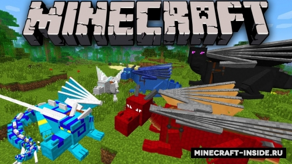
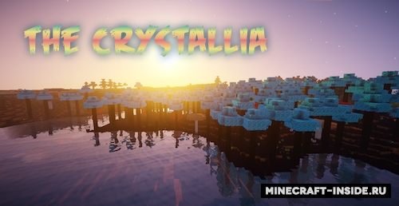
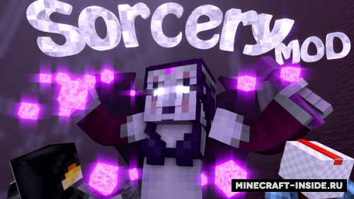
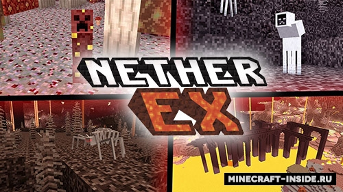
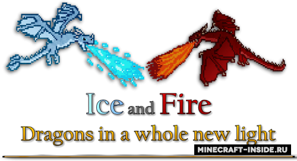

Порт известного и очень популярного мода Dragon Mounts. Он добавляет в игру несколько разновидностей драконов, которых можно будет вырастить из яиц и приручить с помощью сырой рыбы.

The Crystallia - мод, созданный в MCreator и направленный на разнообразие мира майнкрафт, благодаря ему в вашем мире появятся новые биомы с очень необычной раскраской, деревья с синими и красными листьями, новые фрукты, драгоценные камни, броня и инструменты
Modern Warfare подарит нам большую коллекцию крутого огнестрельного оружия с 3D моделями, будут доступны не только разные виды (пистолеты, автоматы, винтовки) но и их различные вариации. Теперь расправиться с неприятелями будет намного проще.

Astral Sorcery - магический мод, основанный на использовании силы звездного света и созвездий. Откройте удивительный мир над вами, который раньше не замечали. Вы сможете изучить космос и применить его мощь в своих целях, усилить свои возможности и изменить окружающую среду.

Удивительный мод, который полностью переработает ад. Теперь вы сможете исследовать 4 уникальных биома, каждый из которых будет заполнен новыми мобами, блоками и предметами.
С этим магическим модом в вашем распоряжении появится система генерирования заклинаний и набор волшебных предметов, а в мире будут генерироваться тематические постройки.
